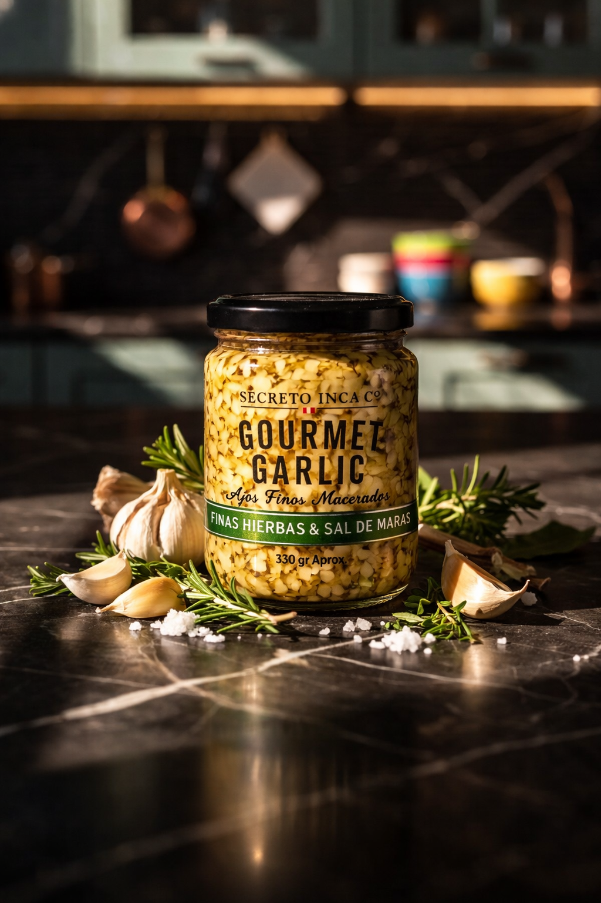

Finas Hierbas & Sal de Maras
Ajos finamente picados y macerados en aceite 100% de girasol, perfumados con finas hierbas y un toque de sal de Maras.
El resultado es un sabor limpio y aromático, con notas herbales que realzan sin opacar. Úsalo para darle un toque gourmet a tus comidas. Ideal para pescados, aves y vegetales.